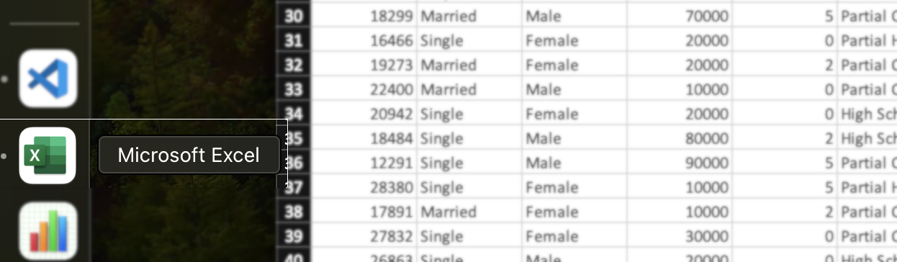

Power of Excel
This article should only serve as a showcase for the power of Excel because Excel is not typically the first option when it comes to data exploration
Excel excels in simplifying data cleaning and presentation tasks with its user-friendly interface. It offers powerful features like sorting, filtering, and formula calculations, making data manipulation simple and easy. With its intuitive charting tools, like pivot tables , Excel enables users to create visually appealing presentations of their data without hassle.
With tools like Filters, searching for unusual or unformatted values is very easy! You don't need to know SQL or Python to filter and manipulate the data. Finding duplicates or rows with values in a certain range is really easy with conditional formatting.As a simple example, I received a dataset of bike purchases from the YouTube channel of AlextheAnalyst, and I was able to perform all steps of data cleaning(Removing Duplicates,Handling Missing Values, Data Formatting,Correcting Erroneous Data,Validating Data,Text Cleaning,Creating Derived Columns) in Excel.
Down below you can find the raw data in bike buyers , the cleaned and transofrmed data in work Sheet and the interactive presentation of results in Dashboard. The excel workbook can be seen and downloaded by this link here a good tutorial to learn the Basics.